Önizleme · yayında değil
Yedi özgün SVG çizim: ortak çizgi kalınlığı, açık pafta zemini, kurumsal yeşil numaralandırma. Çizimlerin içinde yalnız numaralar var; açıklamalar yanda HTML olarak durduğu için 8 dile çevrilebilir. Hiçbirinde ölçü, kapasite veya projeye özgü bilgi yok; hepsi “Şematik anlatım” etiketiyle gösterilir. Uygulanmış örnek sayfalar: İAOSB · SAGRA Ordu · Çukurova–İskenderun. Görsel türü etiketleri: Tüm Projeler.
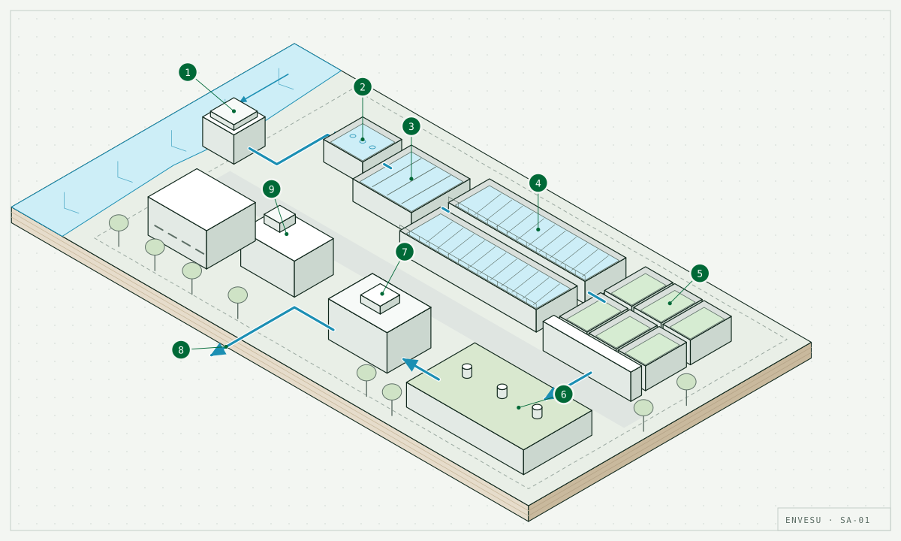
Şematik anlatım · ÖlçeksizSA-01
Aksonometrik şematik anlatım
Önerilen kullanım: Uygun proje bulunamadı (sitedeki projelerde ENVESU kapsamında içme suyu arıtma tesisi yok) — hizmet/sektör sayfasında kullanılabilir
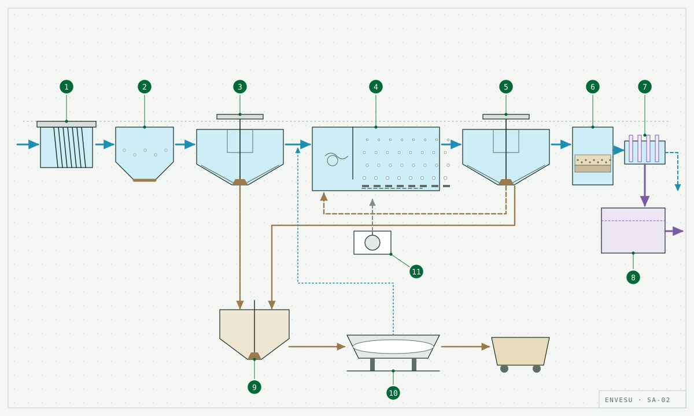
Şematik anlatım · ÖlçeksizSA-02
Şematik proses akış diyagramı
Önerilen kullanım: İAOSB (örnek sayfada uygulandı) · GOSB
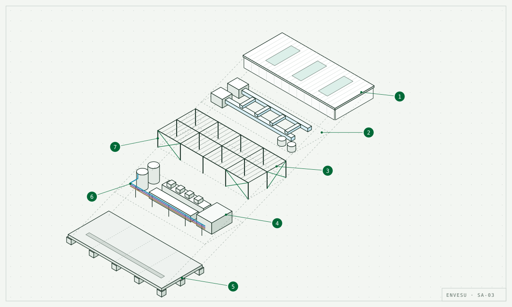
Şematik anlatım · ÖlçeksizSA-03
Disiplinlere ayrılmış aksonometrik anlatım
Önerilen kullanım: SAGRA Ordu (örnek sayfada uygulandı) · TAMEK Salihli/Karacabey, HEKTAŞ, Karbon Siyahı
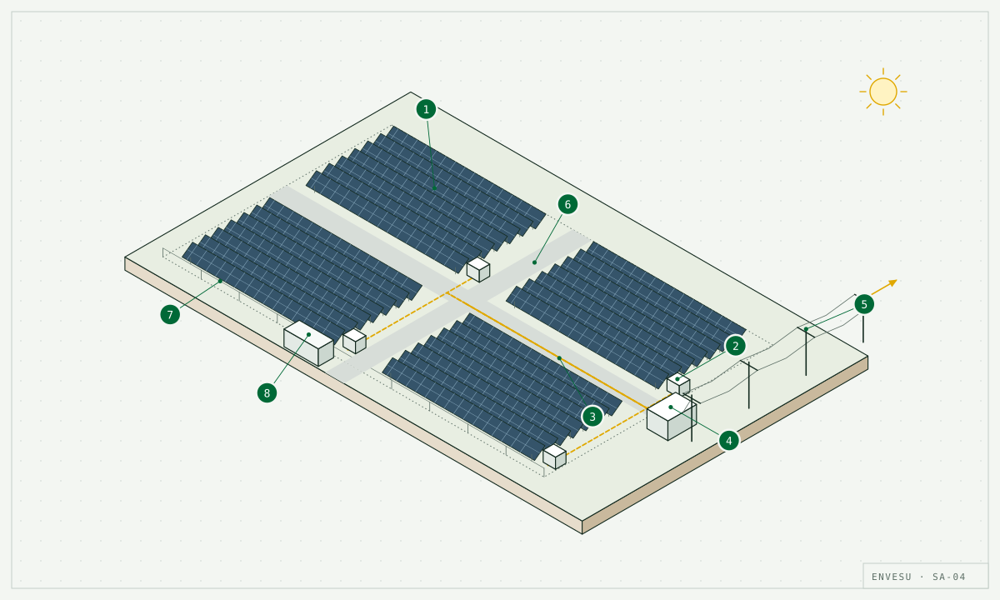
Şematik anlatım · ÖlçeksizSA-04
Şematik yerleşim aksonometrisi
Önerilen kullanım: Yenilenebilir Enerji PID · Giresun GES
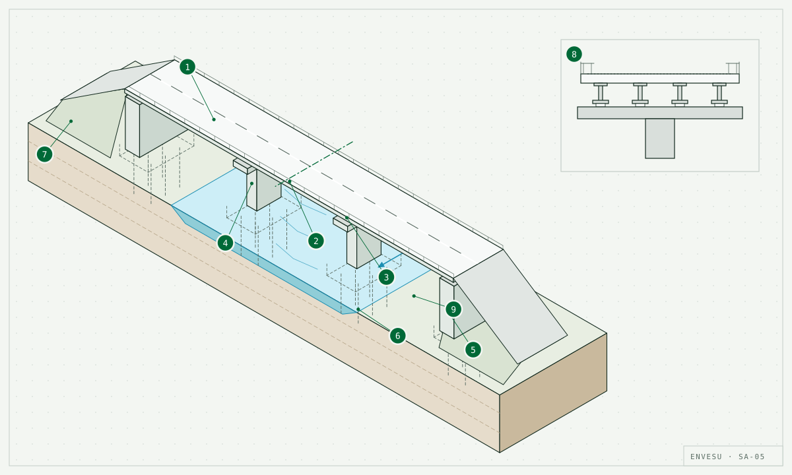
Şematik anlatım · ÖlçeksizSA-05
Aksonometrik şematik anlatım ve enkesit
Önerilen kullanım: Ödemiş, Kiraz, Bergama, Menderes ve Konak Köprüleri · TFDMP
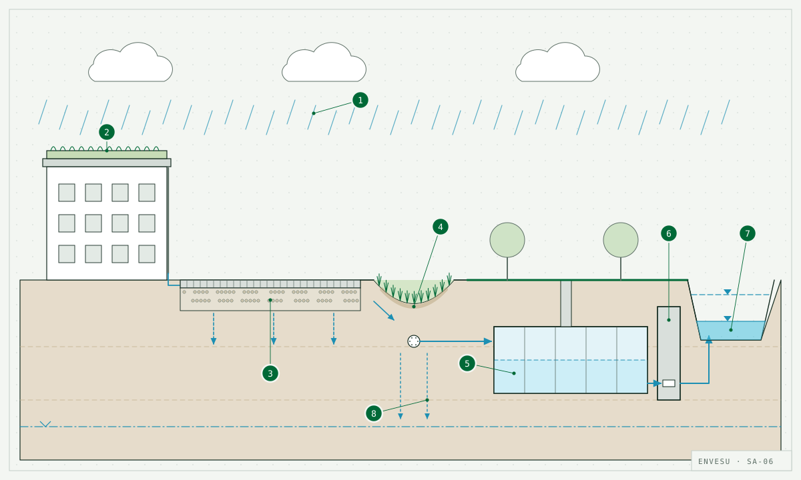
Şematik anlatım · ÖlçeksizSA-06
Şematik teknik kesit
Önerilen kullanım: İklim ve Afete Dayanıklı Şehirler (CDRCP) · TFDMP
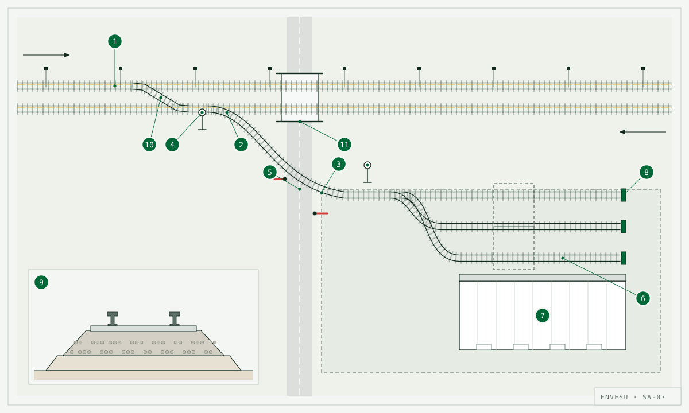
Şematik anlatım · ÖlçeksizSA-07
Şematik plan ve hat enkesiti
Önerilen kullanım: Çukurova–İskenderun Demiryolu (örnek sayfada uygulandı)
Yapay zekâ ile üretilmiş, yazısız ve logosuz görseller. Sitede “Temsili illüstrasyon” etiketiyle gösterilir; hiçbiri bir projenin gerçek tesisi olarak sunulmaz.
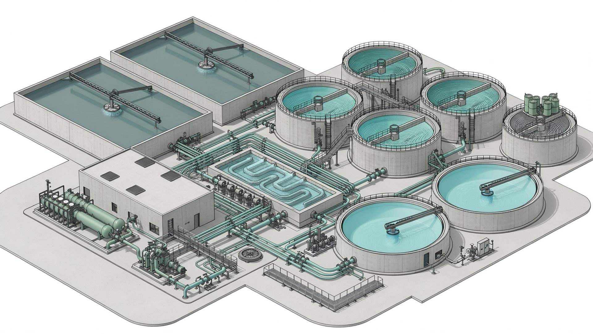
Temsili illüstrasyonCanva
Kullanıldığı yer: OSB'lerde atıksu geri kazanımı makalesi (üst görsel) — sayfayı aç
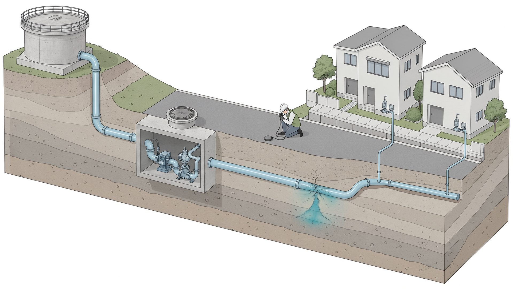
Temsili illüstrasyonCanva
Kullanıldığı yer: NRW Kılavuzu proje sayfası (kapak) · Şebeke kayıpları makalesi — sayfayı aç
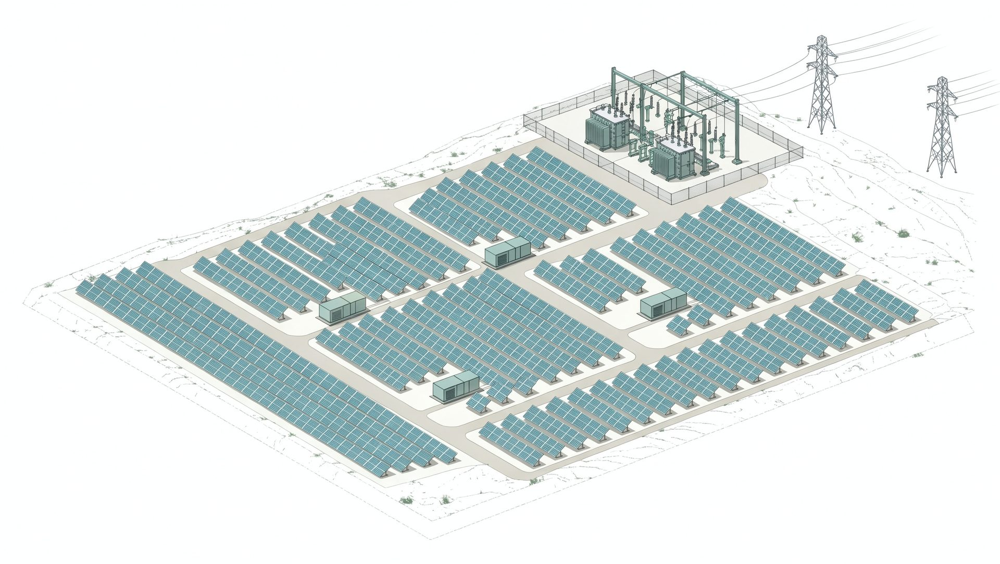
Temsili illüstrasyonCanva
Kullanıldığı yer: Yenilenebilir Enerji PID (kapak) · Giresun GES (galeri) · Belediye GES makalesi — sayfayı aç
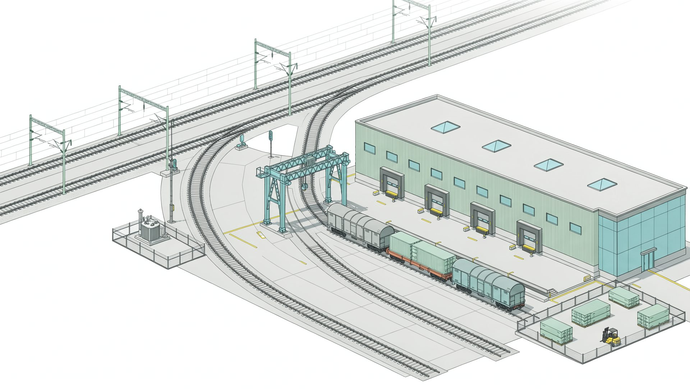
Temsili illüstrasyonCanva
Kullanıldığı yer: İltisak hattı makalesi (üst görsel) · Çukurova–İskenderun (galeri) — sayfayı aç
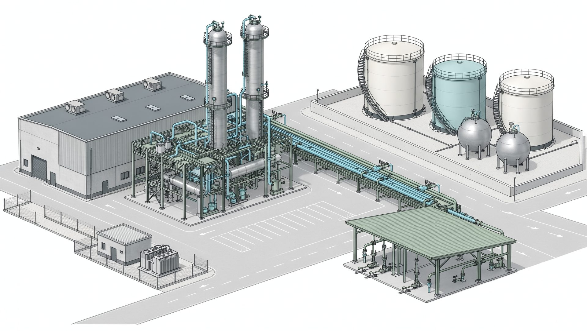
Temsili illüstrasyonCanva
Kullanıldığı yer: Sentetik Karbon Siyahı ve Burgaz Rafinerisi (galeri) — sayfayı aç
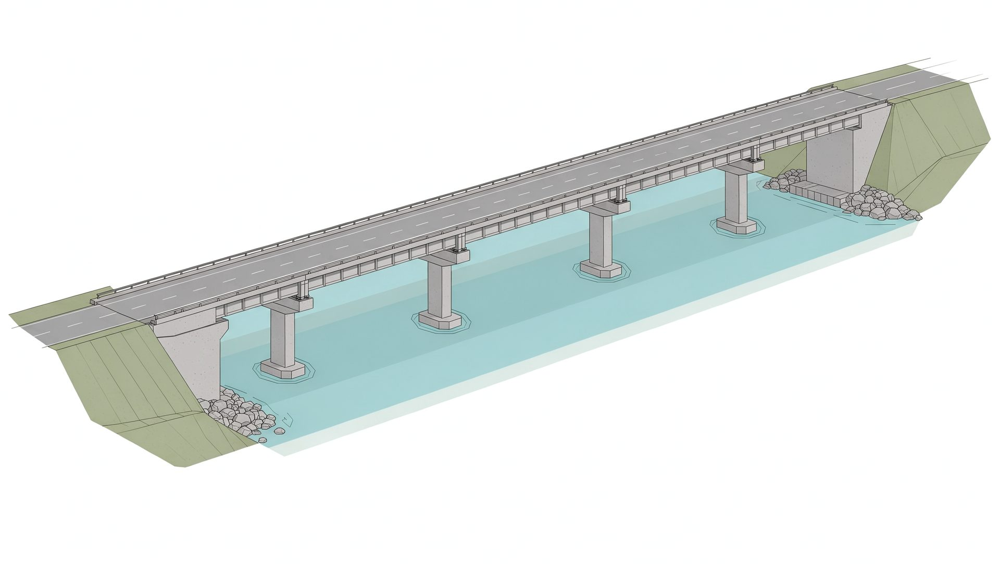
Temsili illüstrasyonCanva
Kullanıldığı yer: Henüz bir sayfaya yerleştirilmedi (İzmir köprülerinde gerçek fotoğraf var)